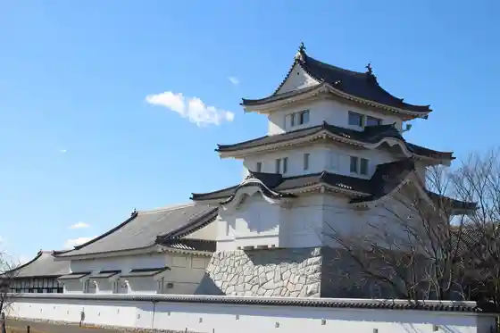
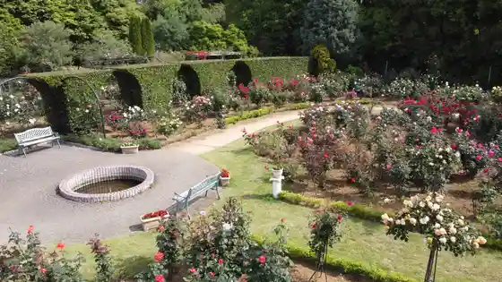

Shimizu Park
Noda, Chiba · 04-7125-3030 · Official / source link
Gurikopia CHIBA
Noda, Chiba · 04-7127-3355 · Official / source link
Chiba Prefectural Sekiyado Shiro Museum
Noda, Chiba · 04-7196-1400 · Official / source link

Kisetsu no Hana (Aki Bara) / Shimizu Park
Noda, Chiba · Official / source link

Ko no Tori Village
Noda, Chiba · 04-7197-1741 · Official / source link
Koeki Zaidanhojin Honke Kamihanawa Rekishikan
Noda, Chiba · 04-7122-2070 · Official / source link
Kikkoman Mo no Shiri Shoyu Kan
Noda, Chiba · 04-7123-5136 · Official / source link
Yukijirushi Megumiruku Noda Kojo
Noda, Chiba · 04-7122-2246 · Official / source link
Noda Kyodo Museum
Noda, Chiba · 04-7124-6851 · Official / source link
Sakuragi Shrine
Noda, Chiba · 04-7121-0001 · Official / source link
Noda Nosambutsu Chokubai Tokoro Yumeaguri Noda
Noda, Chiba · 04-7120-8821 · Official / source link
Noda Civic Hall (Kyu Motegi Saheiji Tei)
Noda, Chiba · 04-7124-6851 · Official / source link
Okikaze Hall
Noda, Chiba · 04-7122-2191 · Official / source link
Furutsu Land Kimagase
Noda, Chiba · 070-9028-3022 · Official / source link
Kikkoman Goyo Kura
Noda, Chiba · 04-7123-5136 · Official / source link
Noda Suzuki Kantaro Memorial Museum
Noda, Chiba · 04-7196-0102 · Official / source link
Maru Farm
Noda, Chiba · 090-7402-0739 · Official / source link
Sekine Meijin Memorial Museum
Noda, Chiba · 04-7199-2090 · Official / source link